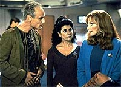
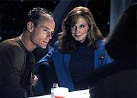
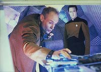
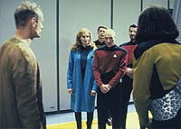

|
MANCHETE
DO EPISÓDIO
História
traz viajante do tempo farsante
e subestima bom senso da tripulação
Episódio
anterior | Próximo
episódio
Sinopse:
Data Estelar: 45349.1.
A Enterprise visita o planeta Penthara IV, onde um asteróide maciço
atingiu um continente despovoado. Temendo que a nuvem de poeira
resultante levasse a um devastador inverno nuclear igual ao que
ocorreu na Terra na primeira metade do século 21, a tripulação
tenta encontrar um meio de evitar os efeitos da nuvem.
Durante a viagem rumo ao planeta, eles encontram uma anomalia
temporal. Ao investigá-la, eles encontram uma nave, de onde um
estranho homem se teleporta para a ponte da Enterprise. Ele diz ser
o professor Berlinghoff Rasmussen, um historiador da Terra vindo do
século 26 que viajou do futuro para estudar a Enterprise. Embora a
tripulação esteja desconfiada de Rasmussen, sua presença levanta
o interesse pelo futuro. Para evitar qualquer contaminação ou
mudança na linha do tempo, Picard insiste que ninguém seja
autorizado a fazer perguntas sobre eventos que ainda não
aconteceram.
 A Enterprise
finalmente chega a Penthara IV, e a devastação causada pelo asteróide
é bastante aparente. Enquanto Geordi e Data trabalham para salvar o
planeta, Rasmussen pede à tripulação que complete longos questionários,
para sua pesquisa. Ele também pede para ver vários equipamentos,
considerando-os como a relíquias de uma era passada. A tripulação
é bastante educada com o professor, mas, quando ele não está por
perto, já começa a perder a paciência com ele e seus métodos.
Troi está especialmente desconfiada do homem e de quais seriam suas
verdadeiras intenções, após sentir uma vibração de que ele
estaria tentando confundi-los.
Quando o plano inicial da tripulação para salvar Penthara IV --uma
liberação de gás carbônico na atmosfera a partir de bolsões no
subsolo do planeta, gerando um efeito estufa capaz de conter o pouco
calor capaz de ultrapassar a nuvem de poeira na porção superior da
atmosfera-- falha, Geordi cria uma solução alternativa, que irá
ou salvar o planeta completamente ou matar toda a vida que o habita.
Em dúvida, Picard pede a Rasmussen conselho sobre o plano, mas o
historiador se recusa a ajudar, partindo do princípio de que Picard
estaria tentando manipular o futuro. Deixado apenas com sua escolha
original de agir ou não agir, Picard segue seu impulso original e
ordena à tripulação que implemente o plano --uma ionização
induzida das partículas contaminadoras da atmosfera, que depois
seriam atraídas para o espaço pela Enterprise.
Os esforços da tripulação são bem-sucedidos, e Penthara IV é
salva. Rasmussen imediatamente se prepara para deixar a Enterprise,
mas Picard e a tripulação se despedem do lado de fora da nave dele
com o anúncio de que farão uma busca no veículo por vários
objetos que desapareceram misteriosamente durante a estadia de
Rasmussen. O professor protesta, mas concorda, sob a condição de
que apenas Data tenha permissão para entrar a nave, para que ele
possa ser depois ordenado a nunca divulgar o que ele viu.
 Uma vez
do lado de dentro, Rasmussen aponta um feiser para Data, revelando
que ele não é um historiador do século 26, mas sim um inventor do
século 22. Ele viajou para a Enterprise a fim de roubar tecnologia
para "inventá-la" em seu próprio tempo, e agora pretende
levar Data com ele. Por sorte, Picard já havia desativado o feiser,
e Data é capaz de subjugar seu oponente. Após se livrar da nave de
Rasmussen --que viaja, sozinha, para outra época--, a tripulação
entrega o impostor às autoridades.
Comentários:
Se o
produtor-executivo Rick Berman foi feliz em sua primeira investida
como roteirista de Jornada (em "Brothers",
do quarto ano), de sua segunda tentativa, "A Matter of
Time", infelizmente não se pode dizer o mesmo. Ele mostrou
qual é a grande vantagem de ser o manda-chuva em uma série de
televisão: é possível produzir a história que quiser, mesmo que
ela seja uma porcaria.
Não que o conceito introduzido no episódio seja ruim de todo --ele
só foi extremamente mal-executado. A idéia é simples: como
reagiria a tripulação da Enterprise ao se encontrar com um homem
proveniente do futuro? E a resposta foi dada: a tripulação
reagiria muito mal.
É incrível que Rasmussen tenha de roubar metade da nave para que
Picard e seus comandados percebessem que o sujeito não era nada do
que dizia ser. A empatia de Troi tampouco era necessária. Afinal,
em primeiro lugar, que historiador, em qualquer época, aceitaria
fazer uma visita a um período pregresso revelando sua identidade e
potencialmente alterando a história?
 Além do mais, o
estilo apatetado e bobo do "professor" não ajuda muito.
Ele perde tempo discutindo onde ficava o livro de Picard em seu
gabinete e contando passos para calcular as dimensões da sala, como
se essas fossem as maiores curiosidades de um historiador voltando
dois séculos no tempo. Não é preciso ser da área para dizer que
Rasmussen não se comporta como alguém digno de crédito.
Vale dizer que o inventor frustrado do século 22 é um dos
visitantes mais chatos que a Enterprise recebeu em sete temporadas
de A Nova Geração --quase um par perfeito para Lwaxana Troi.
A história destinada a oferecer o dilema a Picard --dando alguma
utilidade à presença de Rasmussen-- também é muito
mal-utilizada. No fim das contas, o dilema é resolvido exatamente
do mesmo modo que teria sido se o suposto historiador do futuro não
estivesse lá. Ou seja, como dizer que uma das tramas ajudou a
outra? Elas apenas se tocaram em um determinado momento, para depois
se afastarem novamente. Nada que se possa chamar de desenvolvimento
brilhante de roteiro.
Tirando esse problema da falta de conexão entre as duas histórias
(embora exista uma clara forçada de barra para uni-las), o enredo
que envolve a salvação de Penthara IV oferece alguns elementos
interessantes para raciocinar a respeito. Um deles é o
questionamento do quão difícil é interferir com um ambiente
auto-regulatório. Um asteróide causa um efeito, e a tentativa de
contrabalançá-lo (com um fenômeno que normalmente olhamos com
desconfiança e negativismo --o efeito estufa), embora atinja o
objetivo inicialmente, acaba causando outros eventos não-previstos
que anulam o sucesso da tentativa. Agora, tudo isso fica por conta
da audiência. No episódio mesmo, as coisas estão lá jogadas, sem
qualquer esforço para tornar o tópico mais evidente.
 A conclusão
--um "final feliz" típico de Jornada nas Estrelas--
acabe colocando um ponto final à discussão, quando nossos heróis
finalmente são capazes de dominar o ambiente e
"corrigi-lo". Romântico, mas, pelo menos com base em
nossa experiência atual enquanto espécie, pouco realista. E, mais
importante, pouco dramático também.
Até os efeitos especiais, uma marca de qualidade para a série como
um todo, deixam a desejar nesse episódio. A nave de Rasmussen, pelo
lado de fora, é tão impressionante quanto uma caixa de sapatos. A
sequência em que a Enterprise expele a poeira para o espaço também
é bastante confusa --se Geordi não tivesse contado o que ia
acontecer, provavelmente ninguém entenderia o que estava vendo.
Mas nem tudo é ruim em matéria de efeitos. A abertura da porta da
nave do futuro é bastante interessante, assim como a tomada em que
a nave dispara feixes do disco defletor e os feisers para produzir
uma ignição das partículas da atmosfera --pouco esclarecedor, mas
plasticamente bonito.
No fim das contas, é um episódio decepcionante, por fazer tão
pouco de sua principal atração --os personagens. Se eles
estivessem mais críticos com relação a Rasmussen, ou se o
professor fosse mais convincente, o roteiro teria ganho consistência.
Faltou história para contar, e lábia para contá-la direito.
Digamos que em termos de roteiros da Nova Geração, Rick
Berman teve um aproveitamento de 50% --"A Matter of
Time" é sua segunda e última contribuição como
roteirista. Provavelmente uma sábia decisão.
Citações:
Rasmussen - "I
came to thank you for answering my questions, though I probably
should've asked you to limit yourself to 50.000 words."
("Eu vim para agradecer por ter respondido minhas questões,
embora eu provavelmente devesse ter pedido a você que se limitasse
a 50.000 palavras.")
Data - "You did ask me to be thorough."
("Você pediu que eu fosse meticuloso.")
Worf - "I hate questionnaires."
("Eu odeio questionários.")
Data - "I assume your handprint will open this door whether
you are conscious or not."
("Eu presumo que sua mão irá abrir essa porta com você
estando consciente ou não.")
Trivia:
 Rick Berman disse que sempre esteve interessado em um roteiro que
trouxesse um viajante do tempo, e que esse viajante roubasse Data da
Enterprise. Em seu segundo e último trabalho como roteirista da série,
Berman teve enfim essa oportunidade.
Rick Berman disse que sempre esteve interessado em um roteiro que
trouxesse um viajante do tempo, e que esse viajante roubasse Data da
Enterprise. Em seu segundo e último trabalho como roteirista da série,
Berman teve enfim essa oportunidade.
O papel de Rasmussen foi interpretado por Matt Frewer, de "Max
Headroom". O papel originalmente foi escrito para Robin
Williams, porém na época das filmagens de "A Matter of
Time" ele estava ocupado filmando "Hook - A Volta do
Capitão Gancho".
Sheila Franklin estréia aqui como a alferes Felton. Esse personagem
será visto em mais quatro episódios nesta temporada. A alferes
Felton ocupa o posto que foi de Wesley Crusher na ponte de comando,
e só aparece por lá quando Ro Laren não está disponível.
Ficha
técnica:
Escrito por Rick Berman
Direção de Paul Linch
Exibido em 18/11/1991
Produção: 109
Elenco:
Patrick Stewart como
Jean-Luc Picard
Jonathan Frakes como William Thomas Riker
Brent Spiner como Data
LeVar Burton como Geordi La Forge
Michael Dorn como Worf
Gates McFadden como Beverly Crusher
Marina Sirtis como Deanna Troi
Elenco convidado:
Matt Frewer
como Berlingoff Rasmussen
Stefan Gierash como Dr. Hal Mosely
Sheila Franklin como alferes Felton
Shay Gramer como cientista
Episódio
anterior | Próximo
episódio
|